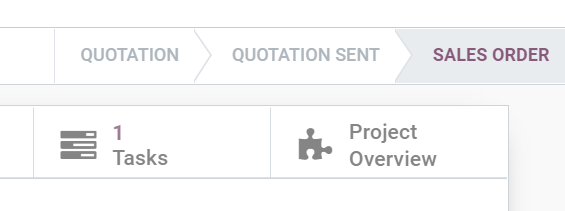
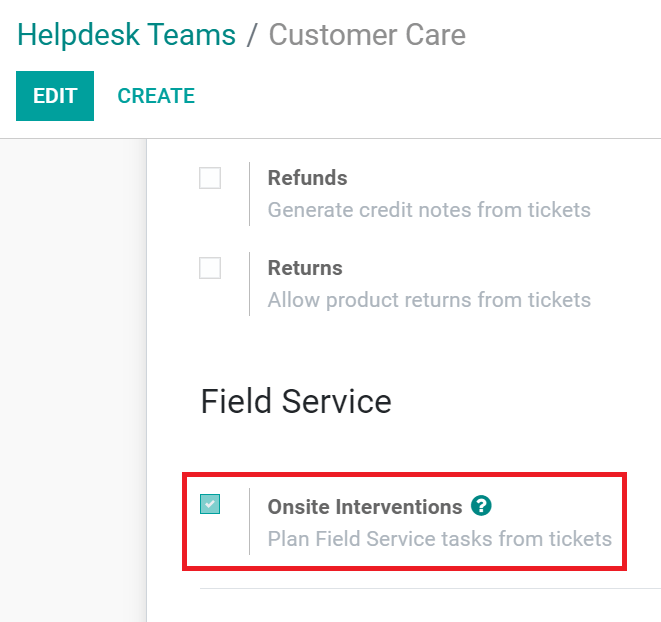
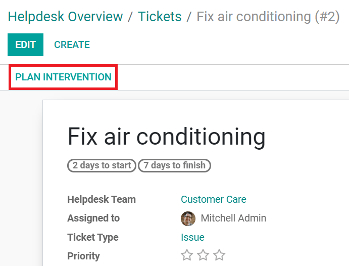

Planificación de intervenciones in situ¶
Desde una orden de ventas¶
El permitir a su equipo de ventas que abre intervenciones in situ hace que la experiencia del usuario no tenga contratiempos. Los clientes recibirán una cotización que tendrán que aprobar antes de que el trabajo inicie.
Vaya a: menuselection:Servicio externo -> Configuración -> Productos y cree o edite un producto.
En la pestaña Información general seleccione Servicio como Tipo de producto.
En la pestaña Ventas para Política de facturación de servicios seleccione Hojas de horas.
Para dar seguimiento al servicio seleccione Crear una tarea en un proyecto existente.
Seleccione su Proyecto.
Seleccione la Plantilla de hoja de trabajo si la usa y después guarde sus cambios.
Desde la aplicación Ventas cree una cotización con el producto y después confírmela. Verá que se creará una tarea de manera automática en el proyecto de Servicio externo. Puede acceder a esta tarea de manera automática desde la orden de ventas.
Desde los tickets del servicio de asistencia¶
La integración con la aplicación Servicio de asistencia su equipo de soporte podrá gestionar solicitudes de intervención directamente. Además, el que pueda planear tareas del servicio externo agilizará su proceso.
Configurar el equipo de servicio de asistencia¶
Vaya a . Seleccione un equipo y elija Intervenciones in situ.
Los tickets del servicio de asistencia ahora vienen con un botón para Planear intervención. Haga cic aquí para crear una nueva tarea en el proyecto de servicio externo.
